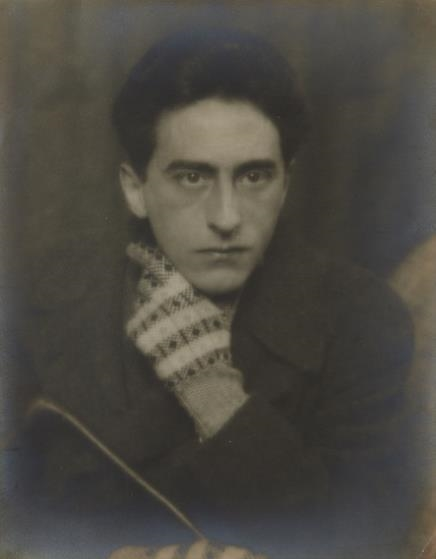
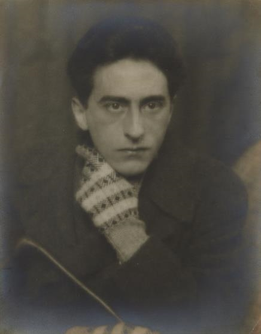
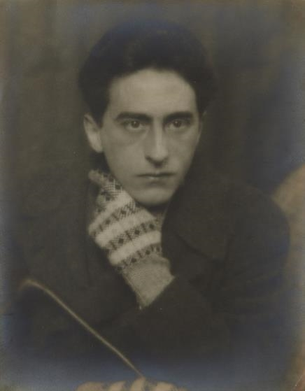
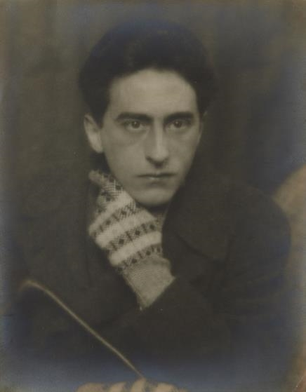

Autor: Man Ray
Data:1920
Técnica: Objeto envolto em tecido amarrado com corda
Dimensões:Aproximadamente 60 x 33 x 27 cm
Localização: Museu Nacional de Arte Moderna (Centre Pompidou), Paris
"O Enigma de Isidore Ducasse" (1920), de Man Ray, é uma obra emblemática do movimento surrealista. Trata-se de um ready-made no qual Man Ray envolve um objeto (presumidamente uma máquina de costura) em tecido, amarrando-o com corda. O resultado é uma forma indefinida, misteriosa e completamente oculta, criando uma sensação de curiosidade e suspense em torno de seu conteúdo. O título da obra faz referência a Isidore Ducasse, pseudônimo do poeta Comte de Lautréamont, cuja obra "Os Cantos de Maldoror" influenciou fortemente os surrealistas. Lautréamont é famoso pela descrição de "o encontro fortuito de uma máquina de costura e um guarda-chuva em uma mesa de dissecação", uma metáfora que representa o espírito do surrealismo — a justaposição de elementos desconexos para criar novas formas de significado. O ato de envolver o objeto em tecido e amarrá-lo com corda desafia as expectativas do espectador, tornando o familiar desconhecido. A obra questiona a função do objeto e sua representação artística, propondo que a arte não precisa ser compreensível ou visível para provocar uma resposta emocional ou intelectual.